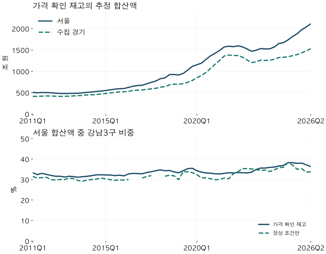

수도권 가격 지도 · 재고 총액
서울 아파트 총액은 얼마일까? 재고가치·강남3구 비중의 2011~2026년 비교
서울·수집 경기 아파트의 현재 측정 재고에 2011~2026년 모형가격을 적용했습니다. 합산액과 강남3구 비중, 포함률, 같은 주택의 변화 및 거래금액과의 차이를 확인하세요.
분석 기간 · 2011Q1~2026Q2 · 현재 측정 재고 · 서울·수집 경기 | 자료 기준일 · 2026-10-04
“서울 아파트를 전부 합치면 얼마일까?”라는 질문에는 가격을 붙인 집의 범위부터 확인해야 합니다. 거래된 집의 계약금액을 더하는 것과, 거래되지 않은 집까지 모형가격으로 평가하는 것은 서로 다른 계산입니다. 현재 측정한 서울·수집 경기 아파트 재고에 2011~2026년 가격을 적용해 그 차이를 살펴봤습니다.
2026년 6월 25일 기준 서울의 추정 합산액은 2,111.6조 원, 수집 경기 36지역은 1,529.6조 원입니다. 서울은 세대수가 알려진 재고의 70~80% 구간만 포함한 부분합입니다. 서울 합산액 중 강남·서초·송파 비중은 36.3%였으며, 이 숫자를 서울 전체 순자산이나 집주인의 부 집중도로 읽으면 안 됩니다.
1. 어떤 집의 어떤 가격을 더했나요?
현재 세대수와 정확한 전용면적이 확인되는 주택에 자체 모형가격을 붙였습니다. 면적별 가격을 실제 전용면적에 맞춰 환산한 뒤 해당 세대수를 곱하고, 지역 안의 값을 더합니다. 한 단지의 대표 주택 가격을 모든 세대에 똑같이 곱하지 않았습니다.
예를 들어 가상 예시로 한 면적의 환산 가격이 5억 원이고 같은 면적이 100세대라면 그 부분의 합산액은 500억 원입니다. 다른 면적은 그 면적의 가격과 세대수를 따로 곱합니다. 일부 주택에 가격이나 면적이 없으면 그 부분은 0원으로 더하지 않고 계산에서 빠졌다고 표시합니다.
‘가격 확인 재고’에는 유한한 양의 추정가격이 있는 주택을 포함합니다. 관측이 적거나 오래된 추정, 같은 단지 안 가까운 면적에서 보완한 가격도 들어갈 수 있습니다. ‘정상 조건 재고’는 모형의 관측 수·최근성 등 정상 조건을 충족한 가격만 남긴 보조 비교입니다. 어느 쪽도 실제 매물 호가나 공인 감정평가액은 아닙니다.
2. 서울·경기의 합산액은 얼마인가요?
최신 비교 시점의 서울은 2,111.6조 원, 수집 경기는 1,529.6조 원입니다. 다만 같은 포함 범위의 완전한 총액 두 개가 아닙니다. 서울의 포함률은 70~80%, 수집 경기는 90~100% 구간입니다.
| 지역·가격 조건 | 합산액 | 포함률 구간 | 누락 경고 |
|---|---|---|---|
| 서울 · 가격 확인 재고 | 2,111.6 | 70~80% | 80% 미만 |
| 서울 · 정상 조건 재고 | 1,711.9 | 60~70% | 80% 미만 |
| 수집 경기 36지역 · 가격 확인 재고 | 1,529.6 | 90~100% | 80% 이상 |
| 수집 경기 36지역 · 정상 조건 재고 | 1,426.2 | 80~90% | 80% 이상 |
| 강남·서초·송파 · 가격 확인 재고 | 765.5 | 70~80% | 80% 미만 |
| 강남·서초·송파 · 정상 조건 재고 | 577.9 | 50~60% | 80% 미만 |
| 서울 나머지 22구 · 가격 확인 재고 | 1,346.1 | 70~80% | 80% 미만 |
| 서울 나머지 22구 · 정상 조건 재고 | 1,133.9 | 60~70% | 80% 미만 |
포함률의 분모는 세대수가 알려진 단지의 양의 세대수입니다. 면적별 세대수나 가격을 연결하지 못한 주택은 분모에 남지만, 단지 전체 세대수 자체를 모르는 곳은 이 분모 밖에 있습니다. 따라서 포함률 90~100%도 해당 지역의 모든 아파트를 거의 빠짐없이 확인했다는 인증은 아닙니다.
정상 조건만 남기면 서울은 1,711.9조 원, 수집 경기는 1,426.2조 원입니다. 이는 같은 전체 주택의 가격을 더 낮게 평가한 결과가 아니라 합산에 들어가는 주택이 줄어든 결과입니다. 두 금액의 차이를 모형 오차나 적정가격 할인율로 해석하지 마세요.
3. 2011년 이후 합산액 변화는 집값 상승률인가요?
그대로 읽을 수 없습니다. 서울의 가격 확인 부분합은 2011년 1분기 506.1조 원에서 2026년 2분기 2,111.6조 원으로 커졌습니다. 이 변화에는 가격뿐 아니라, 그 시점까지 건축된 현재 재고와 가격이 확인되는 주택 범위의 변화가 함께 들어 있습니다.

같은 주택을 비교하려면 두 끝점 모두 가격이 있는 재고만 남겨야 합니다. 이 공통 재고의 추정 합산액 변화는 서울 178.3%, 수집 경기 91.2%였습니다. 정상 조건을 두 끝점 모두 충족한 별도 공통 재고에서는 각각 187.0%, 95.9%였습니다.
| 지역·조건 | 변화 | 처음 포함률 | 끝 포함률 |
|---|---|---|---|
| 서울 · 가격 확인 재고 | 178.3% | 70~80% | 50~60% |
| 서울 · 정상 조건 재고 | 187.0% | 50~60% | 40~50% |
| 수집 경기 36지역 · 가격 확인 재고 | 91.2% | 80~90% | 50~60% |
| 수집 경기 36지역 · 정상 조건 재고 | 95.9% | 70~80% | 40~50% |
| 강남·서초·송파 · 가격 확인 재고 | 205.3% | 70~80% | 50~60% |
| 강남·서초·송파 · 정상 조건 재고 | 216.9% | 50~60% | 30~40% |
| 서울 나머지 22구 · 가격 확인 재고 | 165.0% | 70~80% | 50~60% |
| 서울 나머지 22구 · 정상 조건 재고 | 173.9% | 50~60% | 40~50% |
공통 재고 표의 처음과 끝 포함률이 다른 이유는 비교 주택의 세대수가 바뀌어서가 아닙니다. 같은 공통 재고를 각 시점의 알려진 재고 분모와 비교하기 때문입니다. 공통 재고는 현재까지 남아 있는 주택 중 양끝 가격이 있는 집들이므로, 당시 모든 주택의 투자수익률을 대표하지 않습니다. 물가·대출·보유비용도 차감하지 않았습니다.
서울 · 62분기 전체 표
| 분기·조건 | 합산액 | 포함률 구간 | 누락 경고 |
|---|---|---|---|
| 2011Q1 · 가격 확인 재고 | 506.1 | 70~80% | 80% 미만 |
| 2011Q1 · 정상 조건 재고 | 385.4 | 60~70% | 80% 미만 |
| 2011Q2 · 가격 확인 재고 | 497.2 | 70~80% | 80% 미만 |
| 2011Q2 · 정상 조건 재고 | 387.5 | 60~70% | 80% 미만 |
| 2011Q3 · 가격 확인 재고 | 503.3 | 70~80% | 80% 미만 |
| 2011Q3 · 정상 조건 재고 | 382.4 | 60~70% | 80% 미만 |
| 2011Q4 · 가격 확인 재고 | 501.7 | 70~80% | 80% 미만 |
| 2011Q4 · 정상 조건 재고 | 382.1 | 60~70% | 80% 미만 |
| 2012Q1 · 가격 확인 재고 | 497.0 | 70~80% | 80% 미만 |
| 2012Q1 · 정상 조건 재고 | 368.9 | 60~70% | 80% 미만 |
| 2012Q2 · 가격 확인 재고 | 488.1 | 70~80% | 80% 미만 |
| 2012Q2 · 정상 조건 재고 | 358.9 | 60~70% | 80% 미만 |
| 2012Q3 · 가격 확인 재고 | 481.5 | 70~80% | 80% 미만 |
| 2012Q3 · 정상 조건 재고 | 341.3 | 50~60% | 80% 미만 |
| 2012Q4 · 가격 확인 재고 | 479.6 | 70~80% | 80% 미만 |
| 2012Q4 · 정상 조건 재고 | 350.0 | 60~70% | 80% 미만 |
| 2013Q1 · 가격 확인 재고 | 483.0 | 70~80% | 80% 미만 |
| 2013Q1 · 정상 조건 재고 | 375.9 | 60~70% | 80% 미만 |
| 2013Q2 · 가격 확인 재고 | 484.7 | 70~80% | 80% 미만 |
| 2013Q2 · 정상 조건 재고 | 394.3 | 60~70% | 80% 미만 |
| 2013Q3 · 가격 확인 재고 | 487.0 | 70~80% | 80% 미만 |
| 2013Q3 · 정상 조건 재고 | 395.8 | 60~70% | 80% 미만 |
| 2013Q4 · 가격 확인 재고 | 495.6 | 70~80% | 80% 미만 |
| 2013Q4 · 정상 조건 재고 | 406.6 | 60~70% | 80% 미만 |
| 2014Q1 · 가격 확인 재고 | 508.6 | 70~80% | 80% 미만 |
| 2014Q1 · 정상 조건 재고 | 438.4 | 60~70% | 80% 미만 |
| 2014Q2 · 가격 확인 재고 | 514.7 | 70~80% | 80% 미만 |
| 2014Q2 · 정상 조건 재고 | 439.6 | 60~70% | 80% 미만 |
| 2014Q3 · 가격 확인 재고 | 529.2 | 70~80% | 80% 미만 |
| 2014Q3 · 정상 조건 재고 | 448.7 | 60~70% | 80% 미만 |
| 2014Q4 · 가격 확인 재고 | 537.6 | 70~80% | 80% 미만 |
| 2014Q4 · 정상 조건 재고 | 463.6 | 60~70% | 80% 미만 |
| 2015Q1 · 가격 확인 재고 | 550.1 | 70~80% | 80% 미만 |
| 2015Q1 · 정상 조건 재고 | 482.1 | 70~80% | 80% 미만 |
| 2015Q2 · 가격 확인 재고 | 565.3 | 70~80% | 80% 미만 |
| 2015Q2 · 정상 조건 재고 | 500.6 | 70~80% | 80% 미만 |
| 2015Q3 · 가격 확인 재고 | 581.6 | 70~80% | 80% 미만 |
| 2015Q3 · 정상 조건 재고 | 518.0 | 70~80% | 80% 미만 |
| 2015Q4 · 가격 확인 재고 | 593.7 | 70~80% | 80% 미만 |
| 2015Q4 · 정상 조건 재고 | 524.9 | 70~80% | 80% 미만 |
| 2016Q1 · 가격 확인 재고 | 596.6 | 70~80% | 80% 미만 |
| 2016Q1 · 정상 조건 재고 | 517.9 | 60~70% | 80% 미만 |
| 2016Q2 · 가격 확인 재고 | 623.1 | 70~80% | 80% 미만 |
| 2016Q2 · 정상 조건 재고 | 547.7 | 70~80% | 80% 미만 |
| 2016Q3 · 가격 확인 재고 | 650.9 | 70~80% | 80% 미만 |
| 2016Q3 · 정상 조건 재고 | 미제시 | 미제시 | 미제시 |
| 2016Q4 · 가격 확인 재고 | 667.1 | 70~80% | 80% 미만 |
| 2016Q4 · 정상 조건 재고 | 미제시 | 미제시 | 미제시 |
| 2017Q1 · 가격 확인 재고 | 672.9 | 70~80% | 80% 미만 |
| 2017Q1 · 정상 조건 재고 | 580.8 | 60~70% | 80% 미만 |
| 2017Q2 · 가격 확인 재고 | 707.1 | 70~80% | 80% 미만 |
| 2017Q2 · 정상 조건 재고 | 628.2 | 70~80% | 80% 미만 |
| 2017Q3 · 가격 확인 재고 | 741.9 | 70~80% | 80% 미만 |
| 2017Q3 · 정상 조건 재고 | 659.7 | 70~80% | 80% 미만 |
| 2017Q4 · 가격 확인 재고 | 771.8 | 70~80% | 80% 미만 |
| 2017Q4 · 정상 조건 재고 | 미제시 | 미제시 | 미제시 |
| 2018Q1 · 가격 확인 재고 | 827.3 | 70~80% | 80% 미만 |
| 2018Q1 · 정상 조건 재고 | 미제시 | 미제시 | 미제시 |
| 2018Q2 · 가격 확인 재고 | 845.1 | 70~80% | 80% 미만 |
| 2018Q2 · 정상 조건 재고 | 734.8 | 60~70% | 80% 미만 |
| 2018Q3 · 가격 확인 재고 | 924.0 | 70~80% | 80% 미만 |
| 2018Q3 · 정상 조건 재고 | 808.4 | 60~70% | 80% 미만 |
| 2018Q4 · 가격 확인 재고 | 925.0 | 70~80% | 80% 미만 |
| 2018Q4 · 정상 조건 재고 | 803.8 | 60~70% | 80% 미만 |
| 2019Q1 · 가격 확인 재고 | 913.8 | 70~80% | 80% 미만 |
| 2019Q1 · 정상 조건 재고 | 557.0 | 40~50% | 80% 미만 |
| 2019Q2 · 가격 확인 재고 | 949.6 | 70~80% | 80% 미만 |
| 2019Q2 · 정상 조건 재고 | 702.2 | 50~60% | 80% 미만 |
| 2019Q3 · 가격 확인 재고 | 1,029.4 | 70~80% | 80% 미만 |
| 2019Q3 · 정상 조건 재고 | 862.6 | 60~70% | 80% 미만 |
| 2019Q4 · 가격 확인 재고 | 1,115.2 | 70~80% | 80% 미만 |
| 2019Q4 · 정상 조건 재고 | 974.8 | 70~80% | 80% 미만 |
| 2020Q1 · 가격 확인 재고 | 1,153.2 | 70~80% | 80% 미만 |
| 2020Q1 · 정상 조건 재고 | 997.4 | 60~70% | 80% 미만 |
| 2020Q2 · 가격 확인 재고 | 1,190.5 | 70~80% | 80% 미만 |
| 2020Q2 · 정상 조건 재고 | 988.4 | 60~70% | 80% 미만 |
| 2020Q3 · 가격 확인 재고 | 1,278.5 | 70~80% | 80% 미만 |
| 2020Q3 · 정상 조건 재고 | 1,099.7 | 60~70% | 80% 미만 |
| 2020Q4 · 가격 확인 재고 | 1,361.9 | 70~80% | 80% 미만 |
| 2020Q4 · 정상 조건 재고 | 1,141.7 | 60~70% | 80% 미만 |
| 2021Q1 · 가격 확인 재고 | 1,424.2 | 70~80% | 80% 미만 |
| 2021Q1 · 정상 조건 재고 | 1,176.1 | 60~70% | 80% 미만 |
| 2021Q2 · 가격 확인 재고 | 1,489.1 | 70~80% | 80% 미만 |
| 2021Q2 · 정상 조건 재고 | 1,184.6 | 60~70% | 80% 미만 |
| 2021Q3 · 가격 확인 재고 | 1,570.3 | 70~80% | 80% 미만 |
| 2021Q3 · 정상 조건 재고 | 1,232.8 | 60~70% | 80% 미만 |
| 2021Q4 · 가격 확인 재고 | 1,587.2 | 70~80% | 80% 미만 |
| 2021Q4 · 정상 조건 재고 | 1,130.0 | 50~60% | 80% 미만 |
| 2022Q1 · 가격 확인 재고 | 1,576.9 | 70~80% | 80% 미만 |
| 2022Q1 · 정상 조건 재고 | 827.7 | 30~40% | 80% 미만 |
| 2022Q2 · 가격 확인 재고 | 1,596.8 | 70~80% | 80% 미만 |
| 2022Q2 · 정상 조건 재고 | 792.6 | 30~40% | 80% 미만 |
| 2022Q3 · 가격 확인 재고 | 1,573.2 | 70~80% | 80% 미만 |
| 2022Q3 · 정상 조건 재고 | 682.0 | 30~40% | 80% 미만 |
| 2022Q4 · 가격 확인 재고 | 1,525.0 | 70~80% | 80% 미만 |
| 2022Q4 · 정상 조건 재고 | 446.8 | 20~30% | 80% 미만 |
| 2023Q1 · 가격 확인 재고 | 1,468.6 | 70~80% | 80% 미만 |
| 2023Q1 · 정상 조건 재고 | 686.2 | 30~40% | 80% 미만 |
| 2023Q2 · 가격 확인 재고 | 1,493.9 | 70~80% | 80% 미만 |
| 2023Q2 · 정상 조건 재고 | 948.8 | 50~60% | 80% 미만 |
| 2023Q3 · 가격 확인 재고 | 1,532.5 | 70~80% | 80% 미만 |
| 2023Q3 · 정상 조건 재고 | 1,102.1 | 50~60% | 80% 미만 |
| 2023Q4 · 가격 확인 재고 | 1,523.3 | 70~80% | 80% 미만 |
| 2023Q4 · 정상 조건 재고 | 1,074.2 | 50~60% | 80% 미만 |
| 2024Q1 · 가격 확인 재고 | 1,526.0 | 70~80% | 80% 미만 |
| 2024Q1 · 정상 조건 재고 | 1,010.7 | 50~60% | 80% 미만 |
| 2024Q2 · 가격 확인 재고 | 1,569.7 | 70~80% | 80% 미만 |
| 2024Q2 · 정상 조건 재고 | 1,190.8 | 50~60% | 80% 미만 |
| 2024Q3 · 가격 확인 재고 | 1,652.1 | 70~80% | 80% 미만 |
| 2024Q3 · 정상 조건 재고 | 1,346.5 | 60~70% | 80% 미만 |
| 2024Q4 · 가격 확인 재고 | 1,670.7 | 70~80% | 80% 미만 |
| 2024Q4 · 정상 조건 재고 | 1,341.0 | 60~70% | 80% 미만 |
| 2025Q1 · 가격 확인 재고 | 1,735.6 | 70~80% | 80% 미만 |
| 2025Q1 · 정상 조건 재고 | 1,398.2 | 60~70% | 80% 미만 |
| 2025Q2 · 가격 확인 재고 | 1,814.6 | 70~80% | 80% 미만 |
| 2025Q2 · 정상 조건 재고 | 1,531.2 | 60~70% | 80% 미만 |
| 2025Q3 · 가격 확인 재고 | 1,880.8 | 70~80% | 80% 미만 |
| 2025Q3 · 정상 조건 재고 | 1,539.5 | 60~70% | 80% 미만 |
| 2025Q4 · 가격 확인 재고 | 1,972.9 | 70~80% | 80% 미만 |
| 2025Q4 · 정상 조건 재고 | 1,585.1 | 60~70% | 80% 미만 |
| 2026Q1 · 가격 확인 재고 | 2,039.5 | 70~80% | 80% 미만 |
| 2026Q1 · 정상 조건 재고 | 1,617.1 | 60~70% | 80% 미만 |
| 2026Q2 · 가격 확인 재고 | 2,111.6 | 70~80% | 80% 미만 |
| 2026Q2 · 정상 조건 재고 | 1,711.9 | 60~70% | 80% 미만 |
수집 경기 36지역 · 62분기 전체 표
| 분기·조건 | 합산액 | 포함률 구간 | 누락 경고 |
|---|---|---|---|
| 2011Q1 · 가격 확인 재고 | 411.8 | 80~90% | 80% 이상 |
| 2011Q1 · 정상 조건 재고 | 358.5 | 70~80% | 80% 미만 |
| 2011Q2 · 가격 확인 재고 | 414.9 | 80~90% | 80% 이상 |
| 2011Q2 · 정상 조건 재고 | 364.8 | 70~80% | 80% 미만 |
| 2011Q3 · 가격 확인 재고 | 418.1 | 80~90% | 80% 이상 |
| 2011Q3 · 정상 조건 재고 | 364.5 | 70~80% | 80% 미만 |
| 2011Q4 · 가격 확인 재고 | 422.6 | 80~90% | 80% 이상 |
| 2011Q4 · 정상 조건 재고 | 368.2 | 80~90% | 80% 이상 |
| 2012Q1 · 가격 확인 재고 | 421.2 | 80~90% | 80% 이상 |
| 2012Q1 · 정상 조건 재고 | 362.3 | 70~80% | 80% 미만 |
| 2012Q2 · 가격 확인 재고 | 416.4 | 80~90% | 80% 이상 |
| 2012Q2 · 정상 조건 재고 | 354.6 | 70~80% | 80% 미만 |
| 2012Q3 · 가격 확인 재고 | 412.8 | 80~90% | 80% 이상 |
| 2012Q3 · 정상 조건 재고 | 344.4 | 70~80% | 80% 미만 |
| 2012Q4 · 가격 확인 재고 | 416.1 | 80~90% | 80% 이상 |
| 2012Q4 · 정상 조건 재고 | 353.9 | 70~80% | 80% 미만 |
| 2013Q1 · 가격 확인 재고 | 418.3 | 80~90% | 80% 이상 |
| 2013Q1 · 정상 조건 재고 | 365.0 | 70~80% | 80% 미만 |
| 2013Q2 · 가격 확인 재고 | 423.9 | 80~90% | 80% 이상 |
| 2013Q2 · 정상 조건 재고 | 384.9 | 80~90% | 80% 이상 |
| 2013Q3 · 가격 확인 재고 | 430.0 | 80~90% | 80% 이상 |
| 2013Q3 · 정상 조건 재고 | 395.7 | 80~90% | 80% 이상 |
| 2013Q4 · 가격 확인 재고 | 438.4 | 80~90% | 80% 이상 |
| 2013Q4 · 정상 조건 재고 | 406.1 | 80~90% | 80% 이상 |
| 2014Q1 · 가격 확인 재고 | 447.7 | 80~90% | 80% 이상 |
| 2014Q1 · 정상 조건 재고 | 423.7 | 80~90% | 80% 이상 |
| 2014Q2 · 가격 확인 재고 | 449.7 | 80~90% | 80% 이상 |
| 2014Q2 · 정상 조건 재고 | 424.1 | 80~90% | 80% 이상 |
| 2014Q3 · 가격 확인 재고 | 458.7 | 80~90% | 80% 이상 |
| 2014Q3 · 정상 조건 재고 | 433.4 | 80~90% | 80% 이상 |
| 2014Q4 · 가격 확인 재고 | 467.7 | 80~90% | 80% 이상 |
| 2014Q4 · 정상 조건 재고 | 445.8 | 80~90% | 80% 이상 |
| 2015Q1 · 가격 확인 재고 | 481.2 | 80~90% | 80% 이상 |
| 2015Q1 · 정상 조건 재고 | 460.7 | 80~90% | 80% 이상 |
| 2015Q2 · 가격 확인 재고 | 493.0 | 80~90% | 80% 이상 |
| 2015Q2 · 정상 조건 재고 | 476.3 | 80~90% | 80% 이상 |
| 2015Q3 · 가격 확인 재고 | 507.3 | 80~90% | 80% 이상 |
| 2015Q3 · 정상 조건 재고 | 487.8 | 80~90% | 80% 이상 |
| 2015Q4 · 가격 확인 재고 | 516.8 | 80~90% | 80% 이상 |
| 2015Q4 · 정상 조건 재고 | 492.7 | 80~90% | 80% 이상 |
| 2016Q1 · 가격 확인 재고 | 521.2 | 80~90% | 80% 이상 |
| 2016Q1 · 정상 조건 재고 | 486.3 | 80~90% | 80% 이상 |
| 2016Q2 · 가격 확인 재고 | 531.4 | 80~90% | 80% 이상 |
| 2016Q2 · 정상 조건 재고 | 499.5 | 80~90% | 80% 이상 |
| 2016Q3 · 가격 확인 재고 | 549.8 | 80~90% | 80% 이상 |
| 2016Q3 · 정상 조건 재고 | 522.8 | 80~90% | 80% 이상 |
| 2016Q4 · 가격 확인 재고 | 558.9 | 80~90% | 80% 이상 |
| 2016Q4 · 정상 조건 재고 | 533.2 | 80~90% | 80% 이상 |
| 2017Q1 · 가격 확인 재고 | 562.7 | 80~90% | 80% 이상 |
| 2017Q1 · 정상 조건 재고 | 529.0 | 70~80% | 80% 미만 |
| 2017Q2 · 가격 확인 재고 | 575.0 | 80~90% | 80% 이상 |
| 2017Q2 · 정상 조건 재고 | 541.7 | 80~90% | 80% 이상 |
| 2017Q3 · 가격 확인 재고 | 591.2 | 80~90% | 80% 이상 |
| 2017Q3 · 정상 조건 재고 | 560.9 | 80~90% | 80% 이상 |
| 2017Q4 · 가격 확인 재고 | 601.8 | 80~90% | 80% 이상 |
| 2017Q4 · 정상 조건 재고 | 567.6 | 80~90% | 80% 이상 |
| 2018Q1 · 가격 확인 재고 | 628.8 | 80~90% | 80% 이상 |
| 2018Q1 · 정상 조건 재고 | 589.1 | 70~80% | 80% 미만 |
| 2018Q2 · 가격 확인 재고 | 640.4 | 80~90% | 80% 이상 |
| 2018Q2 · 정상 조건 재고 | 597.4 | 70~80% | 80% 미만 |
| 2018Q3 · 가격 확인 재고 | 681.3 | 80~90% | 80% 이상 |
| 2018Q3 · 정상 조건 재고 | 631.9 | 70~80% | 80% 미만 |
| 2018Q4 · 가격 확인 재고 | 698.1 | 80~90% | 80% 이상 |
| 2018Q4 · 정상 조건 재고 | 646.7 | 80~90% | 80% 이상 |
| 2019Q1 · 가격 확인 재고 | 696.1 | 80~90% | 80% 이상 |
| 2019Q1 · 정상 조건 재고 | 591.7 | 70~80% | 80% 미만 |
| 2019Q2 · 가격 확인 재고 | 711.2 | 80~90% | 80% 이상 |
| 2019Q2 · 정상 조건 재고 | 611.2 | 70~80% | 80% 미만 |
| 2019Q3 · 가격 확인 재고 | 742.0 | 80~90% | 80% 이상 |
| 2019Q3 · 정상 조건 재고 | 672.4 | 70~80% | 80% 미만 |
| 2019Q4 · 가격 확인 재고 | 784.6 | 80~90% | 80% 이상 |
| 2019Q4 · 정상 조건 재고 | 738.9 | 80~90% | 80% 이상 |
| 2020Q1 · 가격 확인 재고 | 846.7 | 80~90% | 80% 이상 |
| 2020Q1 · 정상 조건 재고 | 801.7 | 80~90% | 80% 이상 |
| 2020Q2 · 가격 확인 재고 | 902.8 | 80~90% | 80% 이상 |
| 2020Q2 · 정상 조건 재고 | 843.1 | 80~90% | 80% 이상 |
| 2020Q3 · 가격 확인 재고 | 973.7 | 80~90% | 80% 이상 |
| 2020Q3 · 정상 조건 재고 | 915.3 | 80~90% | 80% 이상 |
| 2020Q4 · 가격 확인 재고 | 1,067.4 | 80~90% | 80% 이상 |
| 2020Q4 · 정상 조건 재고 | 1,010.1 | 80~90% | 80% 이상 |
| 2021Q1 · 가격 확인 재고 | 1,165.5 | 80~90% | 80% 이상 |
| 2021Q1 · 정상 조건 재고 | 1,101.5 | 80~90% | 80% 이상 |
| 2021Q2 · 가격 확인 재고 | 1,255.4 | 80~90% | 80% 이상 |
| 2021Q2 · 정상 조건 재고 | 1,148.0 | 80~90% | 80% 이상 |
| 2021Q3 · 가격 확인 재고 | 1,358.9 | 80~90% | 80% 이상 |
| 2021Q3 · 정상 조건 재고 | 1,240.4 | 80~90% | 80% 이상 |
| 2021Q4 · 가격 확인 재고 | 1,379.8 | 80~90% | 80% 이상 |
| 2021Q4 · 정상 조건 재고 | 1,184.8 | 70~80% | 80% 미만 |
| 2022Q1 · 가격 확인 재고 | 1,373.8 | 80~90% | 80% 이상 |
| 2022Q1 · 정상 조건 재고 | 996.2 | 60~70% | 80% 미만 |
| 2022Q2 · 가격 확인 재고 | 1,367.7 | 80~90% | 80% 이상 |
| 2022Q2 · 정상 조건 재고 | 951.6 | 60~70% | 80% 미만 |
| 2022Q3 · 가격 확인 재고 | 1,333.1 | 80~90% | 80% 이상 |
| 2022Q3 · 정상 조건 재고 | 840.1 | 50~60% | 80% 미만 |
| 2022Q4 · 가격 확인 재고 | 1,265.3 | 80~90% | 80% 이상 |
| 2022Q4 · 정상 조건 재고 | 640.2 | 50~60% | 80% 미만 |
| 2023Q1 · 가격 확인 재고 | 1,203.9 | 80~90% | 80% 이상 |
| 2023Q1 · 정상 조건 재고 | 841.0 | 60~70% | 80% 미만 |
| 2023Q2 · 가격 확인 재고 | 1,223.7 | 80~90% | 80% 이상 |
| 2023Q2 · 정상 조건 재고 | 1,011.2 | 70~80% | 80% 미만 |
| 2023Q3 · 가격 확인 재고 | 1,259.9 | 80~90% | 80% 이상 |
| 2023Q3 · 정상 조건 재고 | 1,095.5 | 70~80% | 80% 미만 |
| 2023Q4 · 가격 확인 재고 | 1,254.2 | 80~90% | 80% 이상 |
| 2023Q4 · 정상 조건 재고 | 1,066.2 | 70~80% | 80% 미만 |
| 2024Q1 · 가격 확인 재고 | 1,257.6 | 80~90% | 80% 이상 |
| 2024Q1 · 정상 조건 재고 | 1,044.2 | 70~80% | 80% 미만 |
| 2024Q2 · 가격 확인 재고 | 1,283.0 | 80~90% | 80% 이상 |
| 2024Q2 · 정상 조건 재고 | 1,134.4 | 70~80% | 80% 미만 |
| 2024Q3 · 가격 확인 재고 | 1,322.2 | 80~90% | 80% 이상 |
| 2024Q3 · 정상 조건 재고 | 1,203.6 | 70~80% | 80% 미만 |
| 2024Q4 · 가격 확인 재고 | 1,328.8 | 80~90% | 80% 이상 |
| 2024Q4 · 정상 조건 재고 | 1,193.6 | 70~80% | 80% 미만 |
| 2025Q1 · 가격 확인 재고 | 1,340.6 | 80~90% | 80% 이상 |
| 2025Q1 · 정상 조건 재고 | 1,180.8 | 70~80% | 80% 미만 |
| 2025Q2 · 가격 확인 재고 | 1,366.2 | 80~90% | 80% 이상 |
| 2025Q2 · 정상 조건 재고 | 1,246.4 | 80~90% | 80% 이상 |
| 2025Q3 · 가격 확인 재고 | 1,391.7 | 80~90% | 80% 이상 |
| 2025Q3 · 정상 조건 재고 | 1,275.7 | 80~90% | 80% 이상 |
| 2025Q4 · 가격 확인 재고 | 1,432.5 | 80~90% | 80% 이상 |
| 2025Q4 · 정상 조건 재고 | 1,309.0 | 80~90% | 80% 이상 |
| 2026Q1 · 가격 확인 재고 | 1,479.3 | 80~90% | 80% 이상 |
| 2026Q1 · 정상 조건 재고 | 1,364.6 | 80~90% | 80% 이상 |
| 2026Q2 · 가격 확인 재고 | 1,529.6 | 90~100% | 80% 이상 |
| 2026Q2 · 정상 조건 재고 | 1,426.2 | 80~90% | 80% 이상 |
강남·서초·송파 · 62분기 전체 표
| 분기·조건 | 합산액 | 포함률 구간 | 누락 경고 |
|---|---|---|---|
| 2011Q1 · 가격 확인 재고 | 168.6 | 70~80% | 80% 미만 |
| 2011Q1 · 정상 조건 재고 | 121.5 | 50~60% | 80% 미만 |
| 2011Q2 · 가격 확인 재고 | 160.9 | 70~80% | 80% 미만 |
| 2011Q2 · 정상 조건 재고 | 118.9 | 50~60% | 80% 미만 |
| 2011Q3 · 가격 확인 재고 | 166.2 | 70~80% | 80% 미만 |
| 2011Q3 · 정상 조건 재고 | 118.0 | 50~60% | 80% 미만 |
| 2011Q4 · 가격 확인 재고 | 163.2 | 70~80% | 80% 미만 |
| 2011Q4 · 정상 조건 재고 | 118.9 | 50~60% | 80% 미만 |
| 2012Q1 · 가격 확인 재고 | 159.2 | 70~80% | 80% 미만 |
| 2012Q1 · 정상 조건 재고 | 110.4 | 50~60% | 80% 미만 |
| 2012Q2 · 가격 확인 재고 | 154.3 | 70~80% | 80% 미만 |
| 2012Q2 · 정상 조건 재고 | 106.9 | 50~60% | 80% 미만 |
| 2012Q3 · 가격 확인 재고 | 152.3 | 70~80% | 80% 미만 |
| 2012Q3 · 정상 조건 재고 | 102.4 | 50~60% | 80% 미만 |
| 2012Q4 · 가격 확인 재고 | 149.5 | 70~80% | 80% 미만 |
| 2012Q4 · 정상 조건 재고 | 104.9 | 50~60% | 80% 미만 |
| 2013Q1 · 가격 확인 재고 | 152.5 | 70~80% | 80% 미만 |
| 2013Q1 · 정상 조건 재고 | 115.4 | 50~60% | 80% 미만 |
| 2013Q2 · 가격 확인 재고 | 152.2 | 70~80% | 80% 미만 |
| 2013Q2 · 정상 조건 재고 | 120.0 | 60~70% | 80% 미만 |
| 2013Q3 · 가격 확인 재고 | 151.6 | 70~80% | 80% 미만 |
| 2013Q3 · 정상 조건 재고 | 116.6 | 50~60% | 80% 미만 |
| 2013Q4 · 가격 확인 재고 | 155.5 | 70~80% | 80% 미만 |
| 2013Q4 · 정상 조건 재고 | 118.7 | 50~60% | 80% 미만 |
| 2014Q1 · 가격 확인 재고 | 160.5 | 70~80% | 80% 미만 |
| 2014Q1 · 정상 조건 재고 | 130.7 | 60~70% | 80% 미만 |
| 2014Q2 · 가격 확인 재고 | 164.4 | 70~80% | 80% 미만 |
| 2014Q2 · 정상 조건 재고 | 131.8 | 60~70% | 80% 미만 |
| 2014Q3 · 가격 확인 재고 | 171.0 | 70~80% | 80% 미만 |
| 2014Q3 · 정상 조건 재고 | 135.3 | 60~70% | 80% 미만 |
| 2014Q4 · 가격 확인 재고 | 173.9 | 70~80% | 80% 미만 |
| 2014Q4 · 정상 조건 재고 | 142.2 | 60~70% | 80% 미만 |
| 2015Q1 · 가격 확인 재고 | 177.1 | 70~80% | 80% 미만 |
| 2015Q1 · 정상 조건 재고 | 146.2 | 60~70% | 80% 미만 |
| 2015Q2 · 가격 확인 재고 | 181.8 | 70~80% | 80% 미만 |
| 2015Q2 · 정상 조건 재고 | 149.8 | 60~70% | 80% 미만 |
| 2015Q3 · 가격 확인 재고 | 185.5 | 70~80% | 80% 미만 |
| 2015Q3 · 정상 조건 재고 | 153.5 | 60~70% | 80% 미만 |
| 2015Q4 · 가격 확인 재고 | 190.3 | 70~80% | 80% 미만 |
| 2015Q4 · 정상 조건 재고 | 156.5 | 60~70% | 80% 미만 |
| 2016Q1 · 가격 확인 재고 | 189.7 | 70~80% | 80% 미만 |
| 2016Q1 · 정상 조건 재고 | 153.7 | 60~70% | 80% 미만 |
| 2016Q2 · 가격 확인 재고 | 203.9 | 70~80% | 80% 미만 |
| 2016Q2 · 정상 조건 재고 | 164.2 | 60~70% | 80% 미만 |
| 2016Q3 · 가격 확인 재고 | 215.0 | 70~80% | 80% 미만 |
| 2016Q3 · 정상 조건 재고 | 미제시 | 미제시 | 미제시 |
| 2016Q4 · 가격 확인 재고 | 219.4 | 70~80% | 80% 미만 |
| 2016Q4 · 정상 조건 재고 | 미제시 | 미제시 | 미제시 |
| 2017Q1 · 가격 확인 재고 | 220.8 | 70~80% | 80% 미만 |
| 2017Q1 · 정상 조건 재고 | 178.4 | 60~70% | 80% 미만 |
| 2017Q2 · 가격 확인 재고 | 236.4 | 70~80% | 80% 미만 |
| 2017Q2 · 정상 조건 재고 | 198.2 | 60~70% | 80% 미만 |
| 2017Q3 · 가격 확인 재고 | 251.1 | 70~80% | 80% 미만 |
| 2017Q3 · 정상 조건 재고 | 210.4 | 60~70% | 80% 미만 |
| 2017Q4 · 가격 확인 재고 | 264.4 | 70~80% | 80% 미만 |
| 2017Q4 · 정상 조건 재고 | 미제시 | 미제시 | 미제시 |
| 2018Q1 · 가격 확인 재고 | 286.9 | 70~80% | 80% 미만 |
| 2018Q1 · 정상 조건 재고 | 미제시 | 미제시 | 미제시 |
| 2018Q2 · 가격 확인 재고 | 289.6 | 70~80% | 80% 미만 |
| 2018Q2 · 정상 조건 재고 | 232.5 | 60~70% | 80% 미만 |
| 2018Q3 · 가격 확인 재고 | 318.2 | 70~80% | 80% 미만 |
| 2018Q3 · 정상 조건 재고 | 259.5 | 60~70% | 80% 미만 |
| 2018Q4 · 가격 확인 재고 | 311.3 | 70~80% | 80% 미만 |
| 2018Q4 · 정상 조건 재고 | 255.2 | 60~70% | 80% 미만 |
| 2019Q1 · 가격 확인 재고 | 303.9 | 70~80% | 80% 미만 |
| 2019Q1 · 정상 조건 재고 | 166.8 | 40~50% | 80% 미만 |
| 2019Q2 · 가격 확인 재고 | 325.4 | 70~80% | 80% 미만 |
| 2019Q2 · 정상 조건 재고 | 237.9 | 50~60% | 80% 미만 |
| 2019Q3 · 가격 확인 재고 | 363.0 | 70~80% | 80% 미만 |
| 2019Q3 · 정상 조건 재고 | 290.3 | 60~70% | 80% 미만 |
| 2019Q4 · 가격 확인 재고 | 396.2 | 80~90% | 80% 이상 |
| 2019Q4 · 정상 조건 재고 | 325.3 | 60~70% | 80% 미만 |
| 2020Q1 · 가격 확인 재고 | 395.8 | 70~80% | 80% 미만 |
| 2020Q1 · 정상 조건 재고 | 323.1 | 60~70% | 80% 미만 |
| 2020Q2 · 가격 확인 재고 | 400.0 | 70~80% | 80% 미만 |
| 2020Q2 · 정상 조건 재고 | 304.9 | 60~70% | 80% 미만 |
| 2020Q3 · 가격 확인 재고 | 424.3 | 70~80% | 80% 미만 |
| 2020Q3 · 정상 조건 재고 | 338.7 | 60~70% | 80% 미만 |
| 2020Q4 · 가격 확인 재고 | 450.8 | 80~90% | 80% 이상 |
| 2020Q4 · 정상 조건 재고 | 347.0 | 60~70% | 80% 미만 |
| 2021Q1 · 가격 확인 재고 | 466.9 | 70~80% | 80% 미만 |
| 2021Q1 · 정상 조건 재고 | 351.3 | 50~60% | 80% 미만 |
| 2021Q2 · 가격 확인 재고 | 486.9 | 70~80% | 80% 미만 |
| 2021Q2 · 정상 조건 재고 | 355.4 | 50~60% | 80% 미만 |
| 2021Q3 · 가격 확인 재고 | 517.7 | 70~80% | 80% 미만 |
| 2021Q3 · 정상 조건 재고 | 378.7 | 50~60% | 80% 미만 |
| 2021Q4 · 가격 확인 재고 | 529.1 | 70~80% | 80% 미만 |
| 2021Q4 · 정상 조건 재고 | 343.9 | 40~50% | 80% 미만 |
| 2022Q1 · 가격 확인 재고 | 524.0 | 70~80% | 80% 미만 |
| 2022Q1 · 정상 조건 재고 | 271.1 | 30~40% | 80% 미만 |
| 2022Q2 · 가격 확인 재고 | 533.7 | 70~80% | 80% 미만 |
| 2022Q2 · 정상 조건 재고 | 267.5 | 30~40% | 80% 미만 |
| 2022Q3 · 가격 확인 재고 | 523.8 | 70~80% | 80% 미만 |
| 2022Q3 · 정상 조건 재고 | 240.6 | 30~40% | 80% 미만 |
| 2022Q4 · 가격 확인 재고 | 506.8 | 70~80% | 80% 미만 |
| 2022Q4 · 정상 조건 재고 | 157.5 | 20~30% | 80% 미만 |
| 2023Q1 · 가격 확인 재고 | 492.9 | 70~80% | 80% 미만 |
| 2023Q1 · 정상 조건 재고 | 241.6 | 30~40% | 80% 미만 |
| 2023Q2 · 가격 확인 재고 | 521.0 | 70~80% | 80% 미만 |
| 2023Q2 · 정상 조건 재고 | 329.8 | 50~60% | 80% 미만 |
| 2023Q3 · 가격 확인 재고 | 544.9 | 70~80% | 80% 미만 |
| 2023Q3 · 정상 조건 재고 | 380.1 | 50~60% | 80% 미만 |
| 2023Q4 · 가격 확인 재고 | 541.6 | 70~80% | 80% 미만 |
| 2023Q4 · 정상 조건 재고 | 371.5 | 50~60% | 80% 미만 |
| 2024Q1 · 가격 확인 재고 | 547.1 | 70~80% | 80% 미만 |
| 2024Q1 · 정상 조건 재고 | 342.8 | 40~50% | 80% 미만 |
| 2024Q2 · 가격 확인 재고 | 565.9 | 70~80% | 80% 미만 |
| 2024Q2 · 정상 조건 재고 | 413.6 | 50~60% | 80% 미만 |
| 2024Q3 · 가격 확인 재고 | 605.2 | 70~80% | 80% 미만 |
| 2024Q3 · 정상 조건 재고 | 481.9 | 60~70% | 80% 미만 |
| 2024Q4 · 가격 확인 재고 | 616.6 | 70~80% | 80% 미만 |
| 2024Q4 · 정상 조건 재고 | 483.2 | 60~70% | 80% 미만 |
| 2025Q1 · 가격 확인 재고 | 662.5 | 70~80% | 80% 미만 |
| 2025Q1 · 정상 조건 재고 | 535.1 | 60~70% | 80% 미만 |
| 2025Q2 · 가격 확인 재고 | 692.6 | 70~80% | 80% 미만 |
| 2025Q2 · 정상 조건 재고 | 566.2 | 60~70% | 80% 미만 |
| 2025Q3 · 가격 확인 재고 | 712.1 | 70~80% | 80% 미만 |
| 2025Q3 · 정상 조건 재고 | 539.4 | 50~60% | 80% 미만 |
| 2025Q4 · 가격 확인 재고 | 749.6 | 70~80% | 80% 미만 |
| 2025Q4 · 정상 조건 재고 | 559.5 | 50~60% | 80% 미만 |
| 2026Q1 · 가격 확인 재고 | 759.6 | 70~80% | 80% 미만 |
| 2026Q1 · 정상 조건 재고 | 543.3 | 50~60% | 80% 미만 |
| 2026Q2 · 가격 확인 재고 | 765.5 | 70~80% | 80% 미만 |
| 2026Q2 · 정상 조건 재고 | 577.9 | 50~60% | 80% 미만 |
서울 나머지 22구 · 62분기 전체 표
| 분기·조건 | 합산액 | 포함률 구간 | 누락 경고 |
|---|---|---|---|
| 2011Q1 · 가격 확인 재고 | 337.5 | 70~80% | 80% 미만 |
| 2011Q1 · 정상 조건 재고 | 263.9 | 60~70% | 80% 미만 |
| 2011Q2 · 가격 확인 재고 | 336.3 | 70~80% | 80% 미만 |
| 2011Q2 · 정상 조건 재고 | 268.6 | 60~70% | 80% 미만 |
| 2011Q3 · 가격 확인 재고 | 337.1 | 70~80% | 80% 미만 |
| 2011Q3 · 정상 조건 재고 | 264.4 | 60~70% | 80% 미만 |
| 2011Q4 · 가격 확인 재고 | 338.5 | 70~80% | 80% 미만 |
| 2011Q4 · 정상 조건 재고 | 263.2 | 60~70% | 80% 미만 |
| 2012Q1 · 가격 확인 재고 | 337.8 | 70~80% | 80% 미만 |
| 2012Q1 · 정상 조건 재고 | 258.4 | 60~70% | 80% 미만 |
| 2012Q2 · 가격 확인 재고 | 333.8 | 70~80% | 80% 미만 |
| 2012Q2 · 정상 조건 재고 | 252.0 | 60~70% | 80% 미만 |
| 2012Q3 · 가격 확인 재고 | 329.2 | 70~80% | 80% 미만 |
| 2012Q3 · 정상 조건 재고 | 239.0 | 50~60% | 80% 미만 |
| 2012Q4 · 가격 확인 재고 | 330.1 | 70~80% | 80% 미만 |
| 2012Q4 · 정상 조건 재고 | 245.1 | 60~70% | 80% 미만 |
| 2013Q1 · 가격 확인 재고 | 330.4 | 70~80% | 80% 미만 |
| 2013Q1 · 정상 조건 재고 | 260.4 | 60~70% | 80% 미만 |
| 2013Q2 · 가격 확인 재고 | 332.4 | 70~80% | 80% 미만 |
| 2013Q2 · 정상 조건 재고 | 274.3 | 60~70% | 80% 미만 |
| 2013Q3 · 가격 확인 재고 | 335.4 | 70~80% | 80% 미만 |
| 2013Q3 · 정상 조건 재고 | 279.2 | 60~70% | 80% 미만 |
| 2013Q4 · 가격 확인 재고 | 340.1 | 70~80% | 80% 미만 |
| 2013Q4 · 정상 조건 재고 | 287.9 | 60~70% | 80% 미만 |
| 2014Q1 · 가격 확인 재고 | 348.1 | 70~80% | 80% 미만 |
| 2014Q1 · 정상 조건 재고 | 307.7 | 70~80% | 80% 미만 |
| 2014Q2 · 가격 확인 재고 | 350.3 | 70~80% | 80% 미만 |
| 2014Q2 · 정상 조건 재고 | 307.8 | 70~80% | 80% 미만 |
| 2014Q3 · 가격 확인 재고 | 358.2 | 70~80% | 80% 미만 |
| 2014Q3 · 정상 조건 재고 | 313.4 | 70~80% | 80% 미만 |
| 2014Q4 · 가격 확인 재고 | 363.7 | 70~80% | 80% 미만 |
| 2014Q4 · 정상 조건 재고 | 321.4 | 70~80% | 80% 미만 |
| 2015Q1 · 가격 확인 재고 | 373.0 | 70~80% | 80% 미만 |
| 2015Q1 · 정상 조건 재고 | 335.9 | 70~80% | 80% 미만 |
| 2015Q2 · 가격 확인 재고 | 383.5 | 70~80% | 80% 미만 |
| 2015Q2 · 정상 조건 재고 | 350.8 | 70~80% | 80% 미만 |
| 2015Q3 · 가격 확인 재고 | 396.1 | 70~80% | 80% 미만 |
| 2015Q3 · 정상 조건 재고 | 364.5 | 70~80% | 80% 미만 |
| 2015Q4 · 가격 확인 재고 | 403.4 | 70~80% | 80% 미만 |
| 2015Q4 · 정상 조건 재고 | 368.4 | 70~80% | 80% 미만 |
| 2016Q1 · 가격 확인 재고 | 407.0 | 70~80% | 80% 미만 |
| 2016Q1 · 정상 조건 재고 | 364.2 | 70~80% | 80% 미만 |
| 2016Q2 · 가격 확인 재고 | 419.2 | 70~80% | 80% 미만 |
| 2016Q2 · 정상 조건 재고 | 383.5 | 70~80% | 80% 미만 |
| 2016Q3 · 가격 확인 재고 | 435.9 | 70~80% | 80% 미만 |
| 2016Q3 · 정상 조건 재고 | 미제시 | 미제시 | 미제시 |
| 2016Q4 · 가격 확인 재고 | 447.6 | 70~80% | 80% 미만 |
| 2016Q4 · 정상 조건 재고 | 미제시 | 미제시 | 미제시 |
| 2017Q1 · 가격 확인 재고 | 452.0 | 70~80% | 80% 미만 |
| 2017Q1 · 정상 조건 재고 | 402.4 | 70~80% | 80% 미만 |
| 2017Q2 · 가격 확인 재고 | 470.7 | 70~80% | 80% 미만 |
| 2017Q2 · 정상 조건 재고 | 430.0 | 70~80% | 80% 미만 |
| 2017Q3 · 가격 확인 재고 | 490.8 | 70~80% | 80% 미만 |
| 2017Q3 · 정상 조건 재고 | 449.3 | 70~80% | 80% 미만 |
| 2017Q4 · 가격 확인 재고 | 507.4 | 80~90% | 80% 이상 |
| 2017Q4 · 정상 조건 재고 | 미제시 | 미제시 | 미제시 |
| 2018Q1 · 가격 확인 재고 | 540.4 | 70~80% | 80% 미만 |
| 2018Q1 · 정상 조건 재고 | 미제시 | 미제시 | 미제시 |
| 2018Q2 · 가격 확인 재고 | 555.5 | 70~80% | 80% 미만 |
| 2018Q2 · 정상 조건 재고 | 502.3 | 70~80% | 80% 미만 |
| 2018Q3 · 가격 확인 재고 | 605.8 | 70~80% | 80% 미만 |
| 2018Q3 · 정상 조건 재고 | 548.9 | 70~80% | 80% 미만 |
| 2018Q4 · 가격 확인 재고 | 613.7 | 70~80% | 80% 미만 |
| 2018Q4 · 정상 조건 재고 | 548.6 | 70~80% | 80% 미만 |
| 2019Q1 · 가격 확인 재고 | 609.8 | 70~80% | 80% 미만 |
| 2019Q1 · 정상 조건 재고 | 390.2 | 50~60% | 80% 미만 |
| 2019Q2 · 가격 확인 재고 | 624.2 | 70~80% | 80% 미만 |
| 2019Q2 · 정상 조건 재고 | 464.3 | 50~60% | 80% 미만 |
| 2019Q3 · 가격 확인 재고 | 666.4 | 70~80% | 80% 미만 |
| 2019Q3 · 정상 조건 재고 | 572.3 | 60~70% | 80% 미만 |
| 2019Q4 · 가격 확인 재고 | 719.1 | 70~80% | 80% 미만 |
| 2019Q4 · 정상 조건 재고 | 649.5 | 70~80% | 80% 미만 |
| 2020Q1 · 가격 확인 재고 | 757.4 | 70~80% | 80% 미만 |
| 2020Q1 · 정상 조건 재고 | 674.2 | 60~70% | 80% 미만 |
| 2020Q2 · 가격 확인 재고 | 790.5 | 70~80% | 80% 미만 |
| 2020Q2 · 정상 조건 재고 | 683.5 | 60~70% | 80% 미만 |
| 2020Q3 · 가격 확인 재고 | 854.1 | 70~80% | 80% 미만 |
| 2020Q3 · 정상 조건 재고 | 761.0 | 70~80% | 80% 미만 |
| 2020Q4 · 가격 확인 재고 | 911.1 | 70~80% | 80% 미만 |
| 2020Q4 · 정상 조건 재고 | 794.8 | 60~70% | 80% 미만 |
| 2021Q1 · 가격 확인 재고 | 957.3 | 70~80% | 80% 미만 |
| 2021Q1 · 정상 조건 재고 | 824.9 | 60~70% | 80% 미만 |
| 2021Q2 · 가격 확인 재고 | 1,002.1 | 70~80% | 80% 미만 |
| 2021Q2 · 정상 조건 재고 | 829.3 | 60~70% | 80% 미만 |
| 2021Q3 · 가격 확인 재고 | 1,052.6 | 70~80% | 80% 미만 |
| 2021Q3 · 정상 조건 재고 | 854.1 | 60~70% | 80% 미만 |
| 2021Q4 · 가격 확인 재고 | 1,058.0 | 70~80% | 80% 미만 |
| 2021Q4 · 정상 조건 재고 | 786.0 | 50~60% | 80% 미만 |
| 2022Q1 · 가격 확인 재고 | 1,053.0 | 70~80% | 80% 미만 |
| 2022Q1 · 정상 조건 재고 | 556.6 | 40~50% | 80% 미만 |
| 2022Q2 · 가격 확인 재고 | 1,063.0 | 70~80% | 80% 미만 |
| 2022Q2 · 정상 조건 재고 | 525.1 | 30~40% | 80% 미만 |
| 2022Q3 · 가격 확인 재고 | 1,049.5 | 70~80% | 80% 미만 |
| 2022Q3 · 정상 조건 재고 | 441.3 | 30~40% | 80% 미만 |
| 2022Q4 · 가격 확인 재고 | 1,018.2 | 70~80% | 80% 미만 |
| 2022Q4 · 정상 조건 재고 | 289.3 | 20~30% | 80% 미만 |
| 2023Q1 · 가격 확인 재고 | 975.6 | 70~80% | 80% 미만 |
| 2023Q1 · 정상 조건 재고 | 444.6 | 30~40% | 80% 미만 |
| 2023Q2 · 가격 확인 재고 | 972.8 | 70~80% | 80% 미만 |
| 2023Q2 · 정상 조건 재고 | 619.0 | 50~60% | 80% 미만 |
| 2023Q3 · 가격 확인 재고 | 987.7 | 70~80% | 80% 미만 |
| 2023Q3 · 정상 조건 재고 | 722.0 | 50~60% | 80% 미만 |
| 2023Q4 · 가격 확인 재고 | 981.8 | 70~80% | 80% 미만 |
| 2023Q4 · 정상 조건 재고 | 702.7 | 50~60% | 80% 미만 |
| 2024Q1 · 가격 확인 재고 | 978.9 | 70~80% | 80% 미만 |
| 2024Q1 · 정상 조건 재고 | 667.9 | 50~60% | 80% 미만 |
| 2024Q2 · 가격 확인 재고 | 1,003.8 | 70~80% | 80% 미만 |
| 2024Q2 · 정상 조건 재고 | 777.2 | 50~60% | 80% 미만 |
| 2024Q3 · 가격 확인 재고 | 1,046.9 | 70~80% | 80% 미만 |
| 2024Q3 · 정상 조건 재고 | 864.6 | 60~70% | 80% 미만 |
| 2024Q4 · 가격 확인 재고 | 1,054.1 | 70~80% | 80% 미만 |
| 2024Q4 · 정상 조건 재고 | 857.8 | 60~70% | 80% 미만 |
| 2025Q1 · 가격 확인 재고 | 1,073.2 | 70~80% | 80% 미만 |
| 2025Q1 · 정상 조건 재고 | 863.1 | 60~70% | 80% 미만 |
| 2025Q2 · 가격 확인 재고 | 1,122.0 | 70~80% | 80% 미만 |
| 2025Q2 · 정상 조건 재고 | 965.0 | 60~70% | 80% 미만 |
| 2025Q3 · 가격 확인 재고 | 1,168.8 | 70~80% | 80% 미만 |
| 2025Q3 · 정상 조건 재고 | 1,000.1 | 60~70% | 80% 미만 |
| 2025Q4 · 가격 확인 재고 | 1,223.2 | 70~80% | 80% 미만 |
| 2025Q4 · 정상 조건 재고 | 1,025.6 | 60~70% | 80% 미만 |
| 2026Q1 · 가격 확인 재고 | 1,280.0 | 70~80% | 80% 미만 |
| 2026Q1 · 정상 조건 재고 | 1,073.9 | 60~70% | 80% 미만 |
| 2026Q2 · 가격 확인 재고 | 1,346.1 | 70~80% | 80% 미만 |
| 2026Q2 · 정상 조건 재고 | 1,133.9 | 60~70% | 80% 미만 |
4. 강남3구가 차지하는 비중은 커졌나요?
이 부분합에서는 커졌습니다. 강남·서초·송파의 비중은 2011년 1분기 33.3%에서 2026년 2분기 36.3%가 됐습니다. 최신 강남3구 합산액은 765.5조 원, 서울 나머지 22구는 1,346.1조 원입니다.
정상 조건만 보면 양끝 비중은 31.5%와 33.8%입니다. 증가 방향은 같지만 크기는 가격 포함 조건에 따라 달라집니다. 또한 금액은 가격과 세대수·면적이 함께 만드는 값이므로, 비중 증가를 강남3구 모든 집의 상대적 가격 상승이나 보유자의 부 집중으로 바꿔 말할 수 없습니다.
62분기의 강남3구 비중 전체 표
| 분기 | 가격 확인 재고 | 정상 조건 재고 |
|---|---|---|
| 2011Q1 | 33.3 | 31.5 |
| 2011Q2 | 32.4 | 30.7 |
| 2011Q3 | 33.0 | 30.9 |
| 2011Q4 | 32.5 | 31.1 |
| 2012Q1 | 32.0 | 29.9 |
| 2012Q2 | 31.6 | 29.8 |
| 2012Q3 | 31.6 | 30.0 |
| 2012Q4 | 31.2 | 30.0 |
| 2013Q1 | 31.6 | 30.7 |
| 2013Q2 | 31.4 | 30.4 |
| 2013Q3 | 31.1 | 29.5 |
| 2013Q4 | 31.4 | 29.2 |
| 2014Q1 | 31.6 | 29.8 |
| 2014Q2 | 31.9 | 30.0 |
| 2014Q3 | 32.3 | 30.2 |
| 2014Q4 | 32.3 | 30.7 |
| 2015Q1 | 32.2 | 30.3 |
| 2015Q2 | 32.2 | 29.9 |
| 2015Q3 | 31.9 | 29.6 |
| 2015Q4 | 32.1 | 29.8 |
| 2016Q1 | 31.8 | 29.7 |
| 2016Q2 | 32.7 | 30.0 |
| 2016Q3 | 33.0 | 미제시 |
| 2016Q4 | 32.9 | 미제시 |
| 2017Q1 | 32.8 | 30.7 |
| 2017Q2 | 33.4 | 31.5 |
| 2017Q3 | 33.8 | 31.9 |
| 2017Q4 | 34.3 | 미제시 |
| 2018Q1 | 34.7 | 미제시 |
| 2018Q2 | 34.3 | 31.6 |
| 2018Q3 | 34.4 | 32.1 |
| 2018Q4 | 33.7 | 31.8 |
| 2019Q1 | 33.3 | 29.9 |
| 2019Q2 | 34.3 | 33.9 |
| 2019Q3 | 35.3 | 33.7 |
| 2019Q4 | 35.5 | 33.4 |
| 2020Q1 | 34.3 | 32.4 |
| 2020Q2 | 33.6 | 30.8 |
| 2020Q3 | 33.2 | 30.8 |
| 2020Q4 | 33.1 | 30.4 |
| 2021Q1 | 32.8 | 29.9 |
| 2021Q2 | 32.7 | 30.0 |
| 2021Q3 | 33.0 | 30.7 |
| 2021Q4 | 33.3 | 30.4 |
| 2022Q1 | 33.2 | 32.8 |
| 2022Q2 | 33.4 | 33.8 |
| 2022Q3 | 33.3 | 35.3 |
| 2022Q4 | 33.2 | 35.3 |
| 2023Q1 | 33.6 | 35.2 |
| 2023Q2 | 34.9 | 34.8 |
| 2023Q3 | 35.6 | 34.5 |
| 2023Q4 | 35.6 | 34.6 |
| 2024Q1 | 35.9 | 33.9 |
| 2024Q2 | 36.1 | 34.7 |
| 2024Q3 | 36.6 | 35.8 |
| 2024Q4 | 36.9 | 36.0 |
| 2025Q1 | 38.2 | 38.3 |
| 2025Q2 | 38.2 | 37.0 |
| 2025Q3 | 37.9 | 35.0 |
| 2025Q4 | 38.0 | 35.3 |
| 2026Q1 | 37.2 | 33.6 |
| 2026Q2 | 36.3 | 33.8 |
2016년 3·4분기, 2017년 4분기, 2018년 1분기의 정상 조건 비교는 미제시입니다. 전체와 정상 조건의 차이에 특정 단지의 기여가 지나치게 커 관련 수치를 함께 가렸습니다. 이 네 시점의 주 비교를 없애거나 비중을 0%로 채우지는 않았습니다.
5. 거래금액 합계와 무엇이 다른가요?
거래금액은 기간에 팔린 계약을 더하고, 재고가치는 특정 시점에 측정한 주택을 평가합니다. 한 해 거래금액이 작아도 거래되지 않은 주택은 재고가치 계산에 들어갈 수 있습니다. 반대로 같은 집이 기간 안에 여러 번 거래되면 거래금액에는 그 계약들이 각각 들어갈 수 있습니다.
앞선 서울 거래금액 읽기는 계약의 규모와 가격대별 금액 비중을 다룹니다. 이 글의 합산액을 그 글의 연간 거래금액으로 나눠 ‘전체 아파트가 팔리는 데 걸리는 시간’을 계산하면, 서로 다른 대상과 가격 기준을 섞게 됩니다. 거래금액도 실제 유입 현금이나 잔금 지급액과 같은 값은 아닙니다.
6. 큰 총액을 읽기 전에 무엇을 확인해야 하나요?
가장 강한 반론은 “빠진 집이 있고 현재 살아남은 재고만 쓰는데, 과거 전체 자산을 설명할 수 있는가?”입니다. 이 분석은 그 전체를 복원하지 못합니다. 자료에서 빠진 집이 포함된 집과 체계적으로 다를 수 있고, 합산한 모형가격에도 오차가 있습니다. 두 광역의 단순 차액으로 상대적 저평가를 판단할 근거도 없습니다.
- 숫자가 기간의 거래 합계인지, 특정 시점의 재고 합산인지 먼저 구분하세요.
- 가격·면적이 확인된 주택의 포함률과, 분모 밖 세대수 미상 단지가 있는지 확인하세요.
- 시점별 부분합 변화와 양끝 공통 주택의 변화를 나눠 보세요.
- 금액 비중을 주택 수 비중·소유자 자산 비중과 구분하세요. 대출과 소유자 정보 없이는 순자산을 계산할 수 없습니다.
개별 후보를 고를 때는 지역의 큰 합산액보다 같은 면적·시점의 비교 가격과 자기 자금 조건이 더 직접적인 정보입니다. 이 표는 시장 규모를 읽는 기준으로 사용하세요.
방법·출처·한계 자세히 보기
자료와 시점: 자료 기준일은 2026년 10월 4일입니다. 국토교통부 아파트 매매 실거래 상세 자료를 바탕으로 한 현행 자체 모형가격과, 공동주택 세대수·면적 및 건축물 자료를 연결한 현재 측정 재고를 사용했습니다. 서울 25구와 수집 경기 36지역이며 인천과 미수집 경기 지역을 포함하지 않습니다. 2011년 1분기~2026년 2분기의 분기말 이전 마지막 완료 목요일 62시점을 비교했습니다. 최신 시점은 2026년 6월 25일로 오늘의 시세가 아닙니다.
산식: 기준 주택의 전용 평형당 모형가격에 실제 전용면적을 평으로 환산한 값과 세대수를 곱해 더했습니다. 같은 면적을 여러 번 세지 않고 단지·면적별 세대수의 일치를 확인했습니다. 모든 시점에 현재 재고를 적용하되 알려진 건축연도 이전에는 제외합니다. 연도 미상은 포함하므로 과거 존속이 모두 확인된 표본은 아닙니다. 과거에 멸실된 주택이나 당시 재고 변화를 완전하게 복원하지 않았습니다.
포함 조건: 100세대·10단지 이상, 알려진 세대수 대비 가격 확인 재고 20% 이상, 단일 단지의 금액 기여 20% 이하를 요구했습니다. 포함률 80% 미만을 별도 표시하며 낮은 포함률을 100%로 보정하지 않았습니다. 양끝 공통 재고는 같은 단지·정확 면적의 주택이 양쪽에 모두 유한한 양의 가격을 가져야 합니다. 정상 조건 비교는 두 끝점 모두 그 조건을 충족한 별도 집합입니다.
검산과 정밀도: 정확 면적을 하나씩 더한 계산과 면적별 가중 평균을 이용한 계산, 기존 지역 합계를 대조했습니다. 강남3구와 서울 나머지의 합계도 서울과 일치합니다. 금액은 0.1조 원, 비중·변화는 소수 첫째 자리로 반올림했고 포함률은 10%포인트 구간입니다. 비중과 변화는 반올림 전 값으로 계산하므로 표시 금액으로 다시 계산하면 마지막 자리가 다를 수 있습니다. 구간 양끝은 범위를 표시하며 합산액의 신뢰구간이 아닙니다.
공개와 한계: 개별 주택 가격·식별자·정확 세대수·단지수는 공개하지 않습니다. 분기별 합산액·비중·공통 재고 변화의 공개 집계 파일(JSON)을 내려받을 수 있습니다. 국토부 원천 안내는 2026년 10월 11일 확인했습니다. 보유자의 부채·소유 관계·실제 매각 가능성이나 합산액 전체의 통계적 오차 범위는 확인하지 못했습니다.
분석·집필: 파파펭귄 (Nobot Kang). 에이전트로 자료 대조·산술 검증·초안 작성을 보조했습니다.